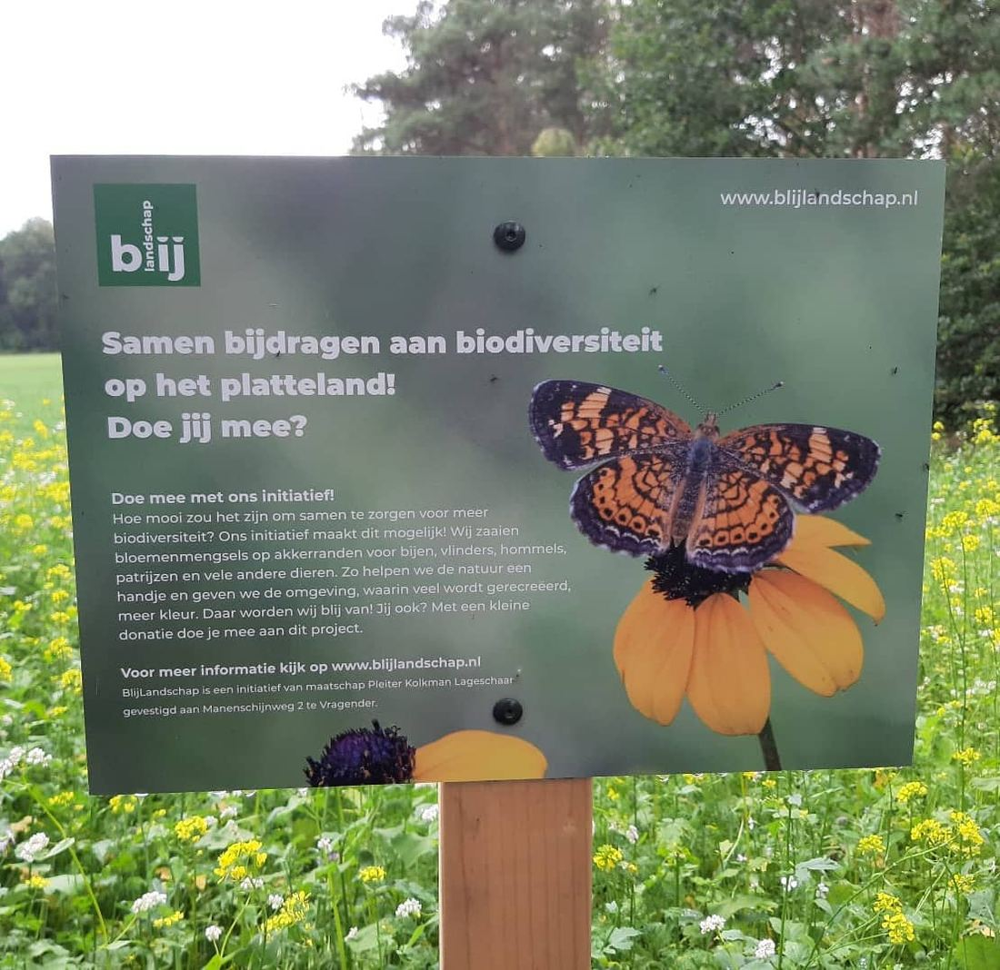

Amerikaanse vlinder op het bord van BlijLandschap
8 augustus 2020 · BlijLandschap
- Op de foto
- Amerikaanse vlinder
- Het ging over
- Inheemse vlinder

Zou toch mooi als we deze vlinder binnenkort tegenkomen.

Zou toch mooi als we deze vlinder binnenkort tegenkomen.